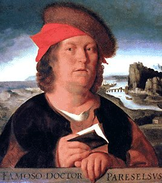

|
 |
 |
 |
|
am Freitag, den 31.12.1999
|
 |
 |
 |
 |
 |
 |
 |
Während Werner also über Kinder philosophierte, traf endlich der Bus ein. Der grüne Herr hatte sich wie Werner abseits von den Kindern positioniert. Vermutlich hatte dies aber
**weniger mit einer Abneigung zu tun, als mit dem Vorsatz möglichst dicht bei Werner zu sein, um ihm folgen zu können,
**wenn dieser in den Bus verschwand. Werner konnte seinen hektischen Puls auf die Ohren hämmern hören.

Er schluckte noch einmal, der Bus kam zu stehen, Werner ging mit forschem Schritt auf die Einstiegstür zu, schob sanft die ältere Dame beiseite und konnte so als erster in den Bus springen. Er drehte sich nach dem Grünen um. Sein Beschatter hatte ebenfalls die ältere Dame überholen können, bis sich aber an den Kindern die Zähne aus. Werner hörte eine der Gören mit unbeschreiblich impertinentem Selbstbewußtsein etwas von "es kommt doch jeder dran" plärren, die Fahrgäste lachten, der Beschatter
**wurde rot. Werner atmete auf, die drei Mädchen kauften noch Fahrkarten, seine Brille rutschte trotzdem den nassen Nasenrücken herunter. Schnell durchschritt er den Bus bis auf Höhe der Ausgangstür und
**wartete hier, bis sich auch die schimpfende ältere Dame auf dem Trittbrett des Busses befand. Die hintere
Türe,
also der Ausstieg
**war glücklicherweise offen geblieben -vermutlich hätte es aber auch keine Probleme gegeben,
**wenn Werner den
Türöffner
hätte drücken müssen-. Jedenfalls sprang Werner nun aus dem Bus wieder heraus und begann zu rennen. Alles hatte er vorher schnell noch durchdenken können, nicht aber seine Fluchtrichtung. Werner verfluchte seine Nervosität, als er feststellte, daß er nicht in Fahrtrichtung des Busses laufen sollte. Schnell bremste er ab und
**wand sich in die entgegengesetzte Richtung. Werner kniff in seiner Kraftanstrengung die Augen zusammen, hatte trotzdem das Gefühl nicht recht beschleunigen zu
Rechts neben sich hörte er den Bus abfahren. Werner machte erleichtert die Augen auf, sah aber zu seinem Entsetzen seinen grünen Schatten japsend vor sich stehen. Werner mußte instinktiv gewußte haben, daß es keinen Zweck mehr hatte nochmals einen Richtungswechsel zu versuchen. Der Grüne
**war schon zu nah. Werner faßte ihn fest ins Auge, machte noch einige Schritte direkt auf ihn zu, merkte, daß der dicke Grüne die Augen nochweiter aufriß, presste ein schnaufendes "Tschuldigung" heraus und stieß den Dicken zur Seite. Werner rannte und rannte,
**wußte irgendwann nicht mehr
**wo er
**war;
**wo er hin
**wollte, hatte er -wie gesagt- ohnehin nie gewußt. Später spürte er nun umso genauer, daß sein Herz die kritische Pulsfrequenz von 180 pro Minute überschritten haben mußte, ihm
**wurde schlecht, sein Schädel schmerzte im Rhythmus des Herzens und die Lungen schienen Ihm das Lied vom Tod zu pfeifen. Werner drehte sich um, kein Grüner
**war mehr zu sehen. Jetzt japste Werner auch aus Freude und Stolz, fühlte sich trotz Übelkeit und Schmerzen wie ein Krimiheld. Natürlich wäre sein Erfolg triumphaler gewesen, hätte der Grüne den Bus - wie geplant - nicht mehr verlassen
Aber trotzdem, er hatte die Polizei blamiert.